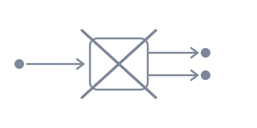

There is no machine that takes a qubit in an unknown state and hands back two of it. Not a machine nobody has built yet — one that cannot exist. The argument is short. Any such machine would have to be a linear operation, because every quantum operation is; and a linear operation applied to a superposition acts on its terms separately. So a copier that gets |0⟩ and |1⟩ right will, handed |0⟩ + |1⟩, produce |00⟩ + |11⟩ — two qubits that agree with each other but are not two copies of what went in.
The theorem is narrow and the consequences are not. You cannot dodge the limits of measurement by making a thousand copies and measuring each one differently. You cannot quietly split a quantum channel and read the copy, which is the load-bearing reason key distribution works at all. And it forbids duplicating a state, not moving one: teleportation is allowed precisely because it destroys the original on the way.